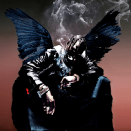
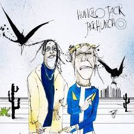

Astroworld (2018)

"Astroworld" je treći studijski album Travisa Scotta, objavljen 3. kolovoza 2018. godine. Album je inspiriran zatvorenim zabavnim parkom u Houstonu, a Scott je rekao da simbolizira njegovu mladost i snove. Album uključuje hitove poput "Sicko Mode", "Stargazing", i "Stop Trying to Be God". Kritičari su ga hvalili zbog inovativne produkcije i atmosfere, a fanovi ga smatraju jednim od njegovih najboljih radova.
Album je komercijalno izuzetno uspješan, debitirao je na prvom mjestu Billboard 200 ljestvice, a Travis je za njega dobio brojne nominacije i nagrade. Produkciju su radili Mike Dean, Tay Keith, Metro Boomin i drugi. Scott je na turneji promovirao album s impresivnim scenskim elementima i roller coasterom na pozornici.
Astroworld nije samo album, već kulturni fenomen koji je dodatno učvrstio Scottovu poziciju među vodećim umjetnicima današnjice.
Rodeo (2015)
"Rodeo" je debitantski studijski album Travisa Scotta koji je predstavio njegov unikatni stil – mješavinu eksperimentalnog trapa, psihodeličnih elemenata i teške produkcije. Album uključuje hitove kao što su "Antidote" i "3500", te gostovanja velikih imena poput Futurea, Kanye Westa i 2 Chainza.
Album je bio prekretnica u njegovoj karijeri jer je potvrdio njegov status ozbiljnog glazbenika na sceni. Kritičari su ga pohvalili zbog kreativnosti i vizije, a fanovi su prepoznali njegov talent za stvaranje glazbene atmosfere.
Birds in the Trap Sing McKnight (2016)
"Birds in the Trap Sing McKnight" je drugi studijski album Travisa Scotta. Album je poznat po introspektivnom tonu, melodičnoj produkciji i snažnim suradnjama. Pjesme poput "Goosebumps" s Kendrickom Lamarom i "Pick Up the Phone" s Young Thugom postale su globalni hitovi.
Album je debitirao na prvom mjestu Billboard ljestvice i dodatno učvrstio njegovu poziciju među najutjecajnijim izvođačima suvremene hip-hop scene. Glazbeni kritičari su pohvalili njegov zvučni identitet i atmosferičnost koja prožima cijeli album.
Utopia (2023)
"Utopia" je najnoviji studijski album Travisa Scotta koji je obilježio njegov povratak nakon duže pauze. Album donosi futuristički zvuk, eksperimentalne beatove i visoku produkcijsku vrijednost. Suradnje s izvođačima poput Beyoncé, The Weeknda, Drakea i Bon Ivera dodatno su podigle profil albuma.
Album je dobio pohvale za svoju kompleksnost i hrabrost u produkciji, a fanovi ga smatraju jednim od njegovih najambicioznijih projekata. "Utopia" pokazuje koliko je Scott sazrio kao umjetnik i producent.
JackBoys (2019)
"JackBoys" je kompilacijski album koji okuplja Travisa Scotta i izvođače s njegovog labela Cactus Jack Records. Iako nije solo projekt, album je dobio puno pažnje i uključuje hitove poput "Out West" s Young Thugom i "Gatti" s Pop Smokeom. Album je kratkog trajanja, ali snažan u utjecaju.
"JackBoys" je dosegao prvo mjesto Billboard 200 ljestvice, čime je postao prvi broj jedan album 2020. godine u SAD-u. Projekt prikazuje Scottovu sposobnost okupljanja i promoviranja novih talenata kroz jedinstvenu produkciju.
Huncho Jack, Jack Huncho (2017)
Ovaj kolaborativni album između Travisa Scotta i Quava iz grupe Migos objavljen je 21. prosinca 2017. Album sadrži 13 pjesama, uključujući "Modern Slavery" i "Black & Chinese". Projekt kombinira trap ritmove i prepoznatljive vokalne stilove oba izvođača.
Album je debitirao na trećem mjestu Billboard 200 i naišao je na mješovite, ali pretežno pozitivne kritike. Iako nije imao snažan komercijalni uspjeh kao Scottovi solo projekti, mnogi fanovi cijene njegovu spontanost i energiju.